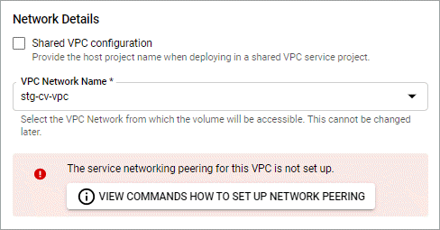

发行说明
发行说明
设置 Google Cloud
 建议更改
建议更改
在使用 Astra Control Service 管理 Google Kubernetes Engine 集群之前，需要执行一些步骤来准备 Google Cloud 项目。

|
如果您不开始使用 Google Cloud Volumes Service for Google Cloud 作为存储后端，而打算稍后再使用，则应完成必要的步骤立即配置 Google Cloud Volumes Service for Google Cloud 。稍后创建服务帐户意味着您可能无法访问现有存储分段。 |
快速开始设置 Google Cloud
按照以下步骤快速入门，或者向下滚动到其余部分以了解完整详细信息。
 查看 Google Kubernetes Engine 的 Astra Control Service 要求
查看 Google Kubernetes Engine 的 Astra Control Service 要求
确保集群运行状况良好并运行受支持的Kubernetes版本、工作节点处于联机状态并运行受支持的映像类型等。 了解有关此步骤的更多信息。
 （可选）：购买适用于 Google Cloud 的 Cloud Volumes Service
（可选）：购买适用于 Google Cloud 的 Cloud Volumes Service
如果您计划使用适用于 Google Cloud 的 Cloud Volumes Service 作为存储后端，请转到 Google 云市场中的 NetApp Cloud Volumes Service 页面，然后选择购买。 了解有关此步骤的更多信息。
 在 Google Cloud 项目中启用 API
在 Google Cloud 项目中启用 API
启用以下 Google Cloud API ：
-
Google Kubernetes 引擎
-
云存储
-
云存储 JSON API
-
服务使用情况
-
Cloud Resource Manager API
-
NetApp Cloud Volumes Service
-
Cloud Volumes Service for Google Cloud 必需
-
Google Persistent Disk 的可选（但建议）
-
-
服务使用者管理 API
-
服务网络 API
-
服务管理 API
 创建具有所需权限的服务帐户
创建具有所需权限的服务帐户
创建具有以下权限的 Google Cloud 服务帐户：
-
Kubernetes 引擎管理员
-
NetApp Cloud Volumes 管理员
-
Cloud Volumes Service for Google Cloud 必需
-
Google Persistent Disk 的可选（但建议）
-
-
存储管理员
-
服务使用情况查看器
-
计算网络查看器
 创建服务帐户密钥
创建服务帐户密钥
为服务帐户创建密钥，并将密钥文件保存在安全位置。 按照分步说明进行操作。
 （可选）：为 VPC 设置网络对等
（可选）：为 VPC 设置网络对等
如果您计划使用适用于 Google Cloud 的 Cloud Volumes Service 作为存储后端，请设置从 VPC 到适用于 Google Cloud 的 Cloud Volumes Service 的网络对等关系。 按照分步说明进行操作。
GKEE 集群要求
Kubernetes 集群必须满足以下要求，才能通过 Astra Control Service 发现和管理它。请注意，只有当您计划使用适用于 Google Cloud 的 Cloud Volumes Service 作为存储后端时，其中某些要求才适用。
- Kubernetes 版本
-
集群运行的Kubbernetes版本必须介于1.26到1.28之间。
- 映像类型
-
每个工作节点的映像类型必须为
COS_CONTAINERD。 - 集群状态
-
集群必须运行状况良好，并且至少有一个联机辅助节点，并且没有处于故障状态的辅助节点。
- Google Cloud 地区
-
如果您计划使用 Cloud Volumes Service for Google Cloud 作为存储后端，则集群必须在中运行 "支持 Cloud Volumes Service for Google Cloud 的 Google 云区域。" 请注意， Astra 控制服务支持两种服务类型： CVS 和 CVS-Performance 。作为最佳实践，您应选择一个支持适用于 Google Cloud 的 Cloud Volumes Service 的区域，即使您不将其用作存储后端也是如此。这样，如果您的性能要求发生变化，将来可以更轻松地将 Cloud Volumes Service for Google Cloud 用作存储后端。
- 网络
-
如果您计划使用适用于 Google Cloud 的 Cloud Volumes Service 作为存储后端，则集群必须位于与适用于 Google Cloud 的 Cloud Volumes Service 建立对等关系的 VPC 中。 下面介绍了此步骤。
- 专用集群
-
如果集群为专用集群，则会显示 "授权网络" 必须允许 Astra 控制服务 IP 地址：
52.188.218.166/32
- GKEE 集群的操作模式
-
您应使用标准操作模式。目前尚未测试自动驾驶模式。 "了解有关操作模式的更多信息"。
- 存储池
-
如果将NetApp Cloud Volumes Service用作CVS服务类型的存储后端、则需要先配置存储池、然后才能配置卷。请参见 "GKE- 集群的服务类型，存储类和 PV 大小" 有关详细信息 …
可选：购买适用于Google Cloud的Cloud Volumes Service
Astra 控制服务可以使用适用于 Google Cloud 的 Cloud Volumes Service 作为永久性卷的存储后端。如果您计划使用此服务，则需要从 Google 云市场购买适用于 Google Cloud 的 Cloud Volumes Service ，以便为永久性卷开票。
-
转至 "NetApp Cloud Volumes Service 页面" 在 Google Cloud Marketplace 中，选择 * 购买 * ，然后按照提示进行操作。
在项目中启用 API
您的项目需要访问特定 Google Cloud API 的权限。API 用于与 Google 云资源进行交互，例如 Google Kubernetes Engine （ GKEE ）集群和 NetApp Cloud Volumes Service 存储。
-
"使用 Google Cloud 控制台或 gcloud CLI 启用以下 API"：
-
Google Kubernetes 引擎
-
云存储
-
云存储 JSON API
-
服务使用情况
-
Cloud Resource Manager API
-
NetApp Cloud Volumes Service （适用于 Google Cloud 的 Cloud Volumes Service 所需）
-
服务使用者管理 API
-
服务网络 API
-
服务管理 API
-
以下视频显示了如何从 Google Cloud 控制台启用 API 。
创建服务帐户
Astra Control Service 使用 Google Cloud 服务帐户为您的 Kubernetes 应用程序数据管理提供便利。
-
转到 Google Cloud ，然后 "使用 console ， gcloud 命令或其他首选方法创建服务帐户"。
-
为服务帐户授予以下角色：
-
* Kubernetes Engine Admin* —用于列出集群并创建管理员访问权限以管理应用程序。
-
* NetApp Cloud Volumes Admin* —用于管理应用程序的永久性存储。
-
* 存储管理员 * —用于管理用于备份应用程序的存储分段和对象。
-
* 服务使用情况查看器 * - 用于检查是否已启用所需的 Cloud Volumes Service for Google Cloud API 。
-
* 计算网络查看器 * - 用于检查 Kubernetes VPC 是否允许访问适用于 Google Cloud 的 Cloud Volumes Service 。
-
如果您要使用 gcloud ，可以从 Astra Control 界面中执行相关步骤。选择 * 帐户 > 凭据 > 添加凭据 * ，然后选择 * 说明 * 。
如果您要使用 Google Cloud 控制台，以下视频将介绍如何从控制台创建服务帐户。
为共享 VPC 配置服务帐户
要管理驻留在一个项目中但使用不同项目（共享 VPC ）中的 VPC 的 GKEE 集群，您需要将 Astra 服务帐户指定为具有 * 计算网络查看器 * 角色的主机项目的成员。
-
从 Google Cloud 控制台中，转到 * IAM & Admin* 并选择 * 服务帐户 * 。
-
找到已有的 Astra 服务帐户 "所需权限" 然后复制此电子邮件地址。
-
转到您的主机项目，然后选择 * IAM & Admin* > * IAM * 。
-
选择 * 添加 * 并为服务帐户添加一个条目。
-
* 新成员 * ：输入服务帐户的电子邮件地址。
-
* 角色 * ：选择 * 计算网络查看器 * 。
-
选择 * 保存 * 。
-
使用共享 VPC 添加 GKEE 集群将完全适用于 Astra 。
创建服务帐户密钥
您将在添加第一个集群时提供服务帐户密钥，而不是向 Astra Control Service 提供用户名和密码。Astra 控制服务使用服务帐户密钥来建立您刚刚设置的服务帐户的身份。
服务帐户密钥是以 JavaScript 对象表示法（ JSON ）格式存储的纯文本。其中包含有关您有权访问的 GCP 资源的信息。
您只能在创建密钥时查看或下载 JSON 文件。但是，您可以随时创建新密钥。
-
转到 Google Cloud ，然后 "使用 console ， gcloud 命令或其他首选方法创建服务帐户密钥"。
-
出现提示时，将服务帐户密钥文件保存在安全位置。
以下视频显示了如何从 Google Cloud 控制台创建服务帐户密钥。
可选：为VPC设置网络对等
如果您计划将 Cloud Volumes Service for Google Cloud 用作存储后端服务，则最后一步是设置从 VPC 到 Cloud Volumes Service for Google Cloud 的网络对等关系。
设置网络对等关系的最简单方法是直接从 Cloud Volumes Service 获取 gcloud 命令。在创建新文件系统时，可以从 Cloud Volumes Service 访问这些命令。
-
"转至NetApp BlueXP全球区域地图" 并确定要在集群所在的 Google Cloud 区域中使用的服务类型。
Cloud Volumes Service 提供两种服务类型： CVS 和 CVS-Performance 。 "详细了解这些服务类型"。
-
在 * 卷 * 页面上，选择 * 创建 * 。
-
在 * 服务类型 * 下，选择 * CVS* 或 * CVS-Performance* 。
您需要为 Google Cloud 区域选择正确的服务类型。这是您在步骤 1 中确定的服务类型。选择服务类型后，页面上的区域列表将更新为支持该服务类型的区域。
完成此步骤后，您只需输入网络信息即可获取命令。
-
在 * 区域 * 下，选择您的区域和分区。
-
在 * 网络详细信息 * 下，选择您的 VPC 。
如果尚未设置网络对等，您将看到以下通知：

-
选择按钮以查看 network peering set up 命令。
-
复制命令并在 Cloud Shell 中运行。
有关使用这些命令的详细信息，请参见 "适用于 GCP 的 Cloud Volumes Service 的快速入门"。
-
完成后，您可以在 * 创建文件系统 * 页面上选择取消。
我们开始创建此卷只是为了获取用于建立网络对等关系的命令。